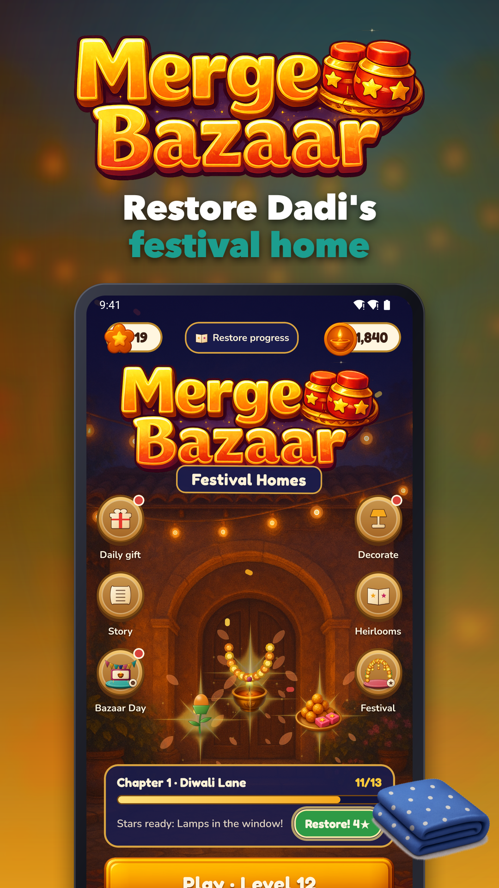
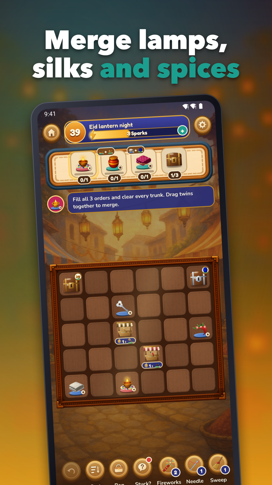
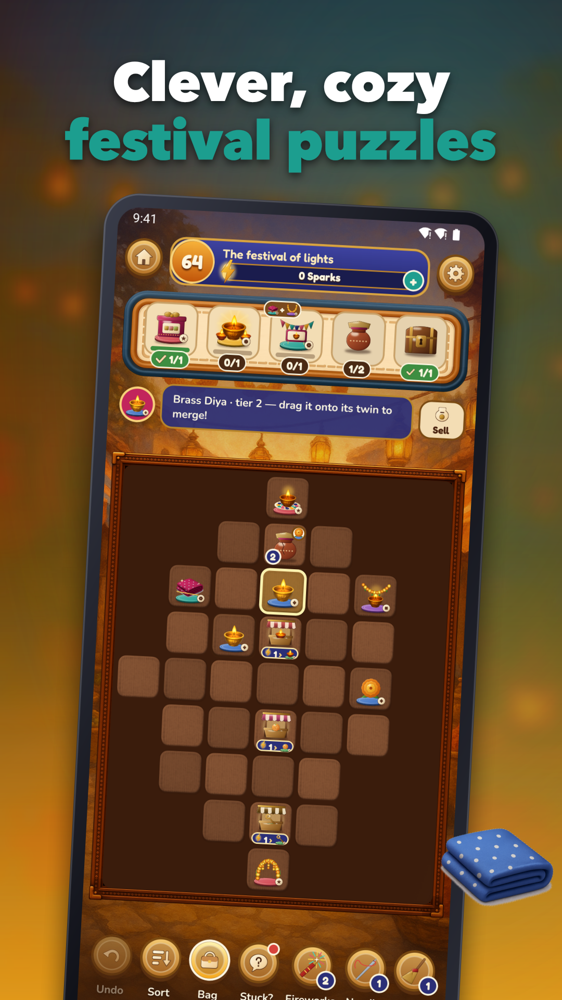
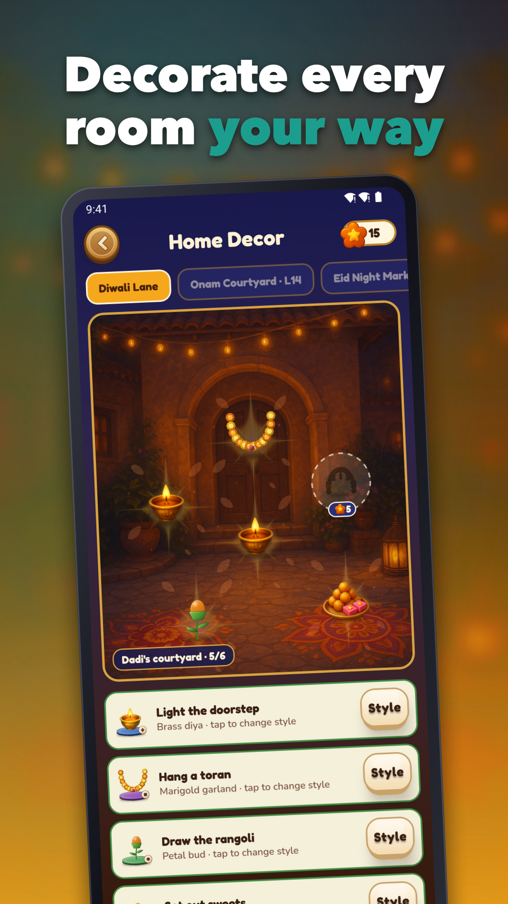
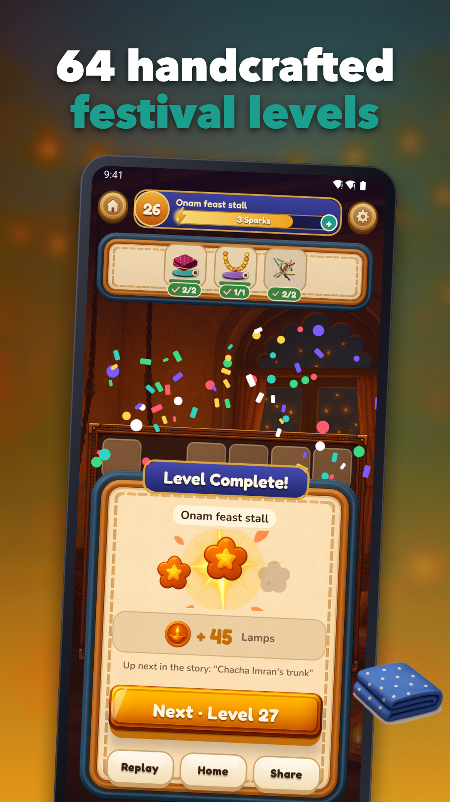
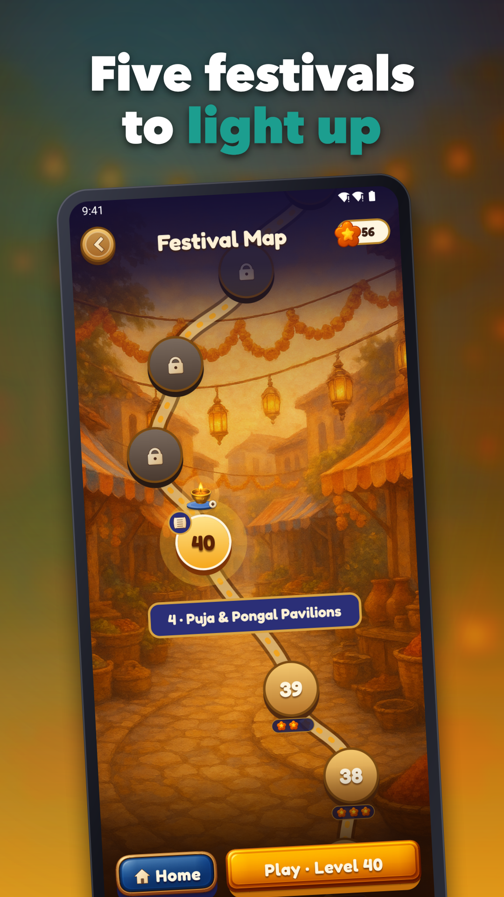

Merge Bazaar: Diwali Merge
Merge festival treasures, restore Dadi's home and play 64 cozy levels offline






Merge Bazaar is a warm, unhurried merge puzzle game set in a festival bazaar. Merge lamps, silks, spices and sweets, fill the orders on each board, and help Dadi bring her family home back to life.
HOW IT PLAYS
• Drag two matching pieces together to merge them into something finer
• Fill each level's festival orders to clear the board
• Work around crates, jars, knots and threads that block your merges
• Undo a move whenever you change your mind
FIVE FESTIVALS, 64 LEVELS
Play through five festival chapters: Diwali Lane, Onam Courtyard, Eid Night Market, Puja & Pongal Pavilions and the Grand Mela. Each chapter has its own handcrafted boards, new pieces and a new part of the story with Dadi, Meera and Chacha Imran.
RESTORE AND DECORATE THE HOME
Stars you earn in levels restore Dadi's home, room by room. Every restoration is a style choice, so you decide how each corner looks, and you can switch styles again for free.
COME BACK EVERY DAY
• Bazaar Day brings a fresh daily board and a festival event with rewards
• A daily gift calendar: miss a day and it simply pauses, it never resets
• Collect family heirlooms as you play
BOOSTERS WHEN YOU NEED THEM
Fireworks, Needle and Sweep unlock as you progress and help with tricky blockers. Buy them with Lamps, the coins you earn by playing.
PLAY ANYWHERE
The game is single-player and works offline. There is no account or login, and your progress is stored on your device.
FAIR ADS AND PURCHASES
• No banner ads before level 5
• The first full-screen ad appears only after level 10, then at most once every 4 levels
• Rewarded ads are always your choice: a hint, a Sparks refill or +50 Lamps
• Remove Ads is a one-time purchase, and coin packs have fixed prices with nothing random
• Ad consent is requested where required
Light the first lamp and start restoring Dadi's festival home today.
Support: jeets98e@gmail.com